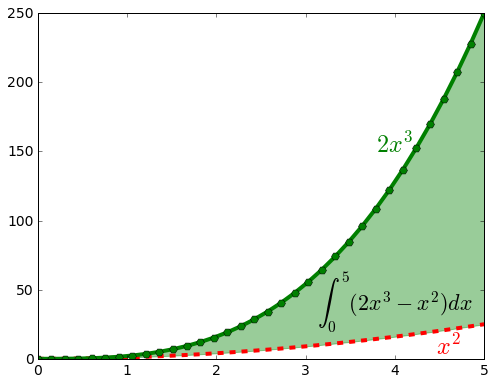

Ejercicios de Clase 09
Realizar un programa para visualizar la función
\[f(x,n,w) = x^n |\sin(w x)|\]El programa debe realizar el gráfico para \(w=10\), con cuatro curvas para \(n=1,2,3,4\), similar al que se muestra en la siguiente figura

Para la función definida a trozos:
\[\begin{split}f(x) = \begin{cases} f_{1}(x) = x^{2}/8 & - \pi < x \le \pi/2 \\ f_{2}(x) = -0.3 x & \pi/2 < x < \pi \\ f_{3}(x) = -(x - 2 \pi)^{2}/6 & \pi \le x \le 5 \pi/2 \\ f_{4}(x) = (x - 2 \pi)/5 & 5 \pi/2 < x \le 3 \pi \end{cases}\end{split}\]realizar la siguiente figura de la manera más fiel posible.

Pistas: Buscar información sobre
plt.text(),plt.fill_between()y sobreplt.xticksyplt.yticks.Rehacer la siguiente figura:
Notando que la curva en color negro corresponde a la suma de las dos curvas en rojo, rehacer la siguiente figura:

Crear una hoja de estilo que permita hacer gráficos adecuados para posters y presentaciones. Debe modificar los tamaños para hacerlos legibles a mayores distancias (sugerencia 16pt). El tamaño de la letra de los nombres de ejes y en las leyendas debe ser mayor también. Las líneas deben ser más gruesas (sugerencia: ~4), los símbolos de mayor tamaño (sugerencia ~10).